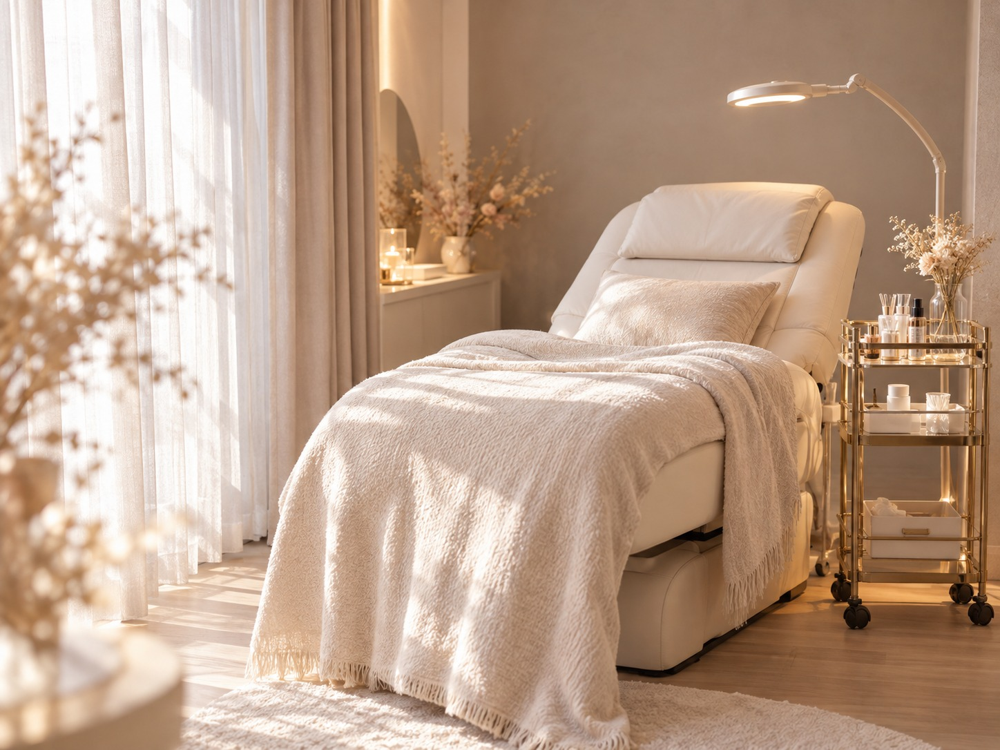
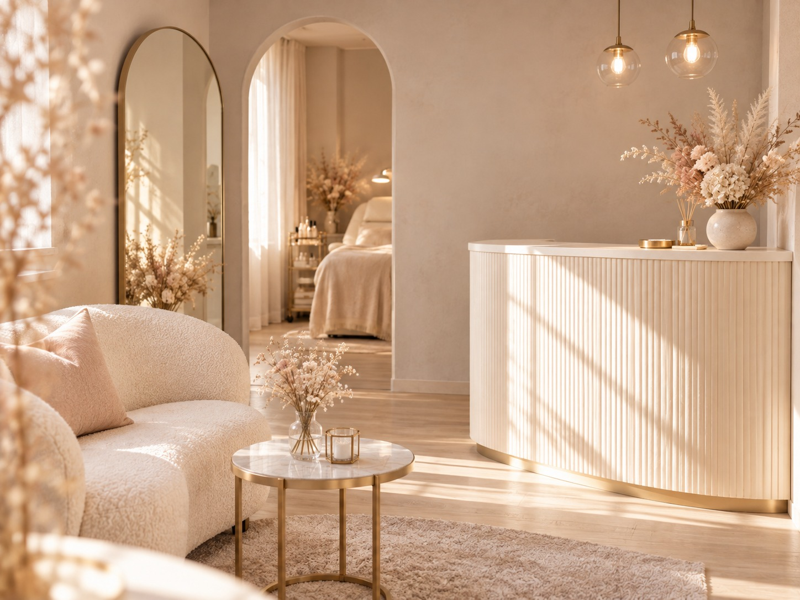

facial & body care
Seren について
Seren（セレン）は、フランス語の「静けさ」から名づけた、完全予約制のプライベートサロンです。
その日の肌と気分をうかがってから、手のぬくもりを大切にしたハンドトリートメントでお手入れします。お肌の悩みがはっきりしていなくても大丈夫です。
エステティシャン歴12年。大手サロンでの経験をへて、Serenをひらきました。
「来てよかった」と思っていただけるよう、お話をよく聞くことを大切にしています。
サロンの様子


店舗情報